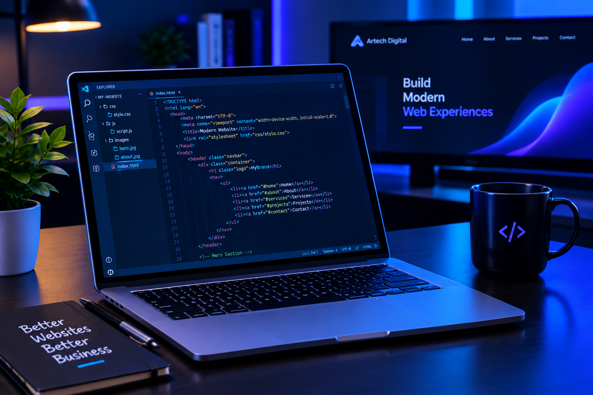

Web Development5 Ways to Improve Your Website
A great website should look professional, load quickly, and provide visitors with a smooth experience. Here are five practical ways to improve your website.
1. Make Your Website Mobile-Friendly
Many people browse websites on their phones. Use responsive layouts so your website looks good on mobile phones , tablets, and desktop computers.
2. Improve Your Website Speed
Large images and unnecessary code can slow down a website. Compress your images and keep your HTML, CSS, and JavaScript organized.
3. Use Clear Navigation
Visitors should be able to find important information without confusion. Use clear navigation links and organize your content into meaningful sections.
4. Choose Consistent Colors and Fonts
Consistent colors, readable fonts, and enough spacing help your website look professional and make your content easier to read.
5. Test Your Website Regularly
Test your buttons, links, contact forms, and responsive layouts. Fixing problems regularly helps visitors enjoy a better experience.
Final Thoughts
Improving a website does not always require a complete redesign. Small, thoughtful improvements can make a big difference.
Back to Artech Digital